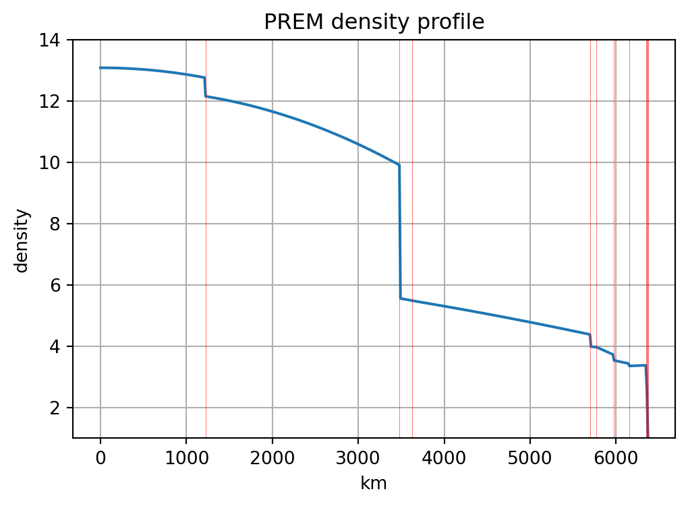
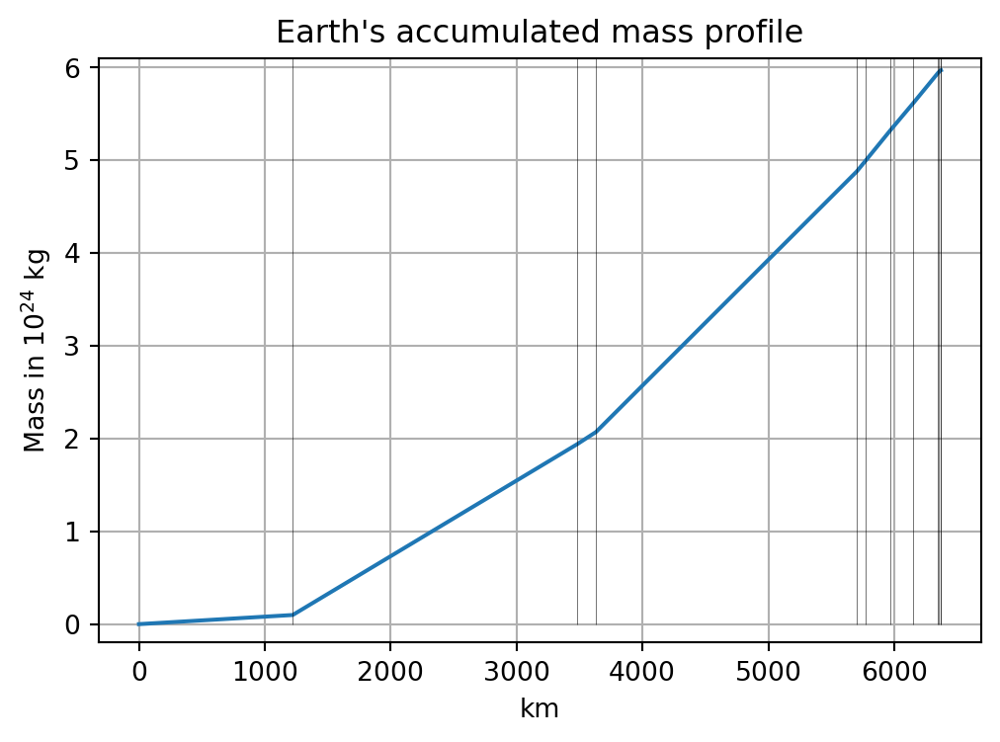
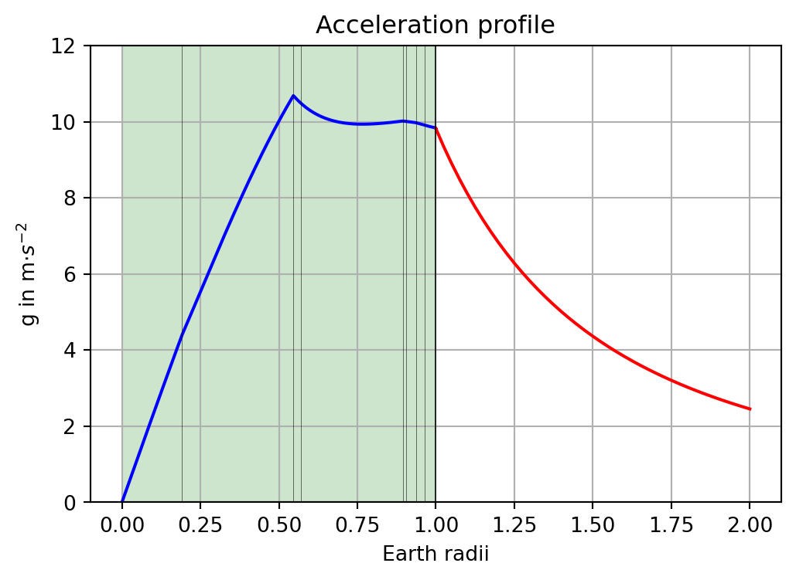
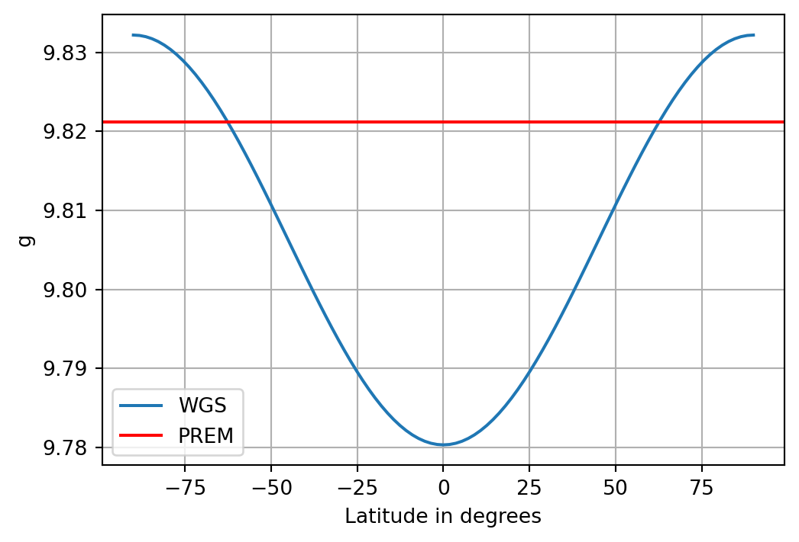

Show the code
import sympy as sp
from sympy import pi
import pandas as pd
import numpy as np
import matplotlib.pyplot as pltimport sympy as sp
from sympy import pi
import pandas as pd
import numpy as np
import matplotlib.pyplot as pltIn this notebook we demonstrate how to model the Earth’s density as piecewise quadratic functions, such that \[ \rho(r) = a_i r^{2} + b_i r + c_i, \quad r_{i-1}<r \le r_{i} \] for any shell enclosed by the radii \(r_{i-1}\) and \(r_i\), \(i=1,2,\dots,11\).
The coefficients \(a_i, b_i, c_i\) as well as the layer boundaries \(r_i\) have been published by Dziewonski & Anderson (1981).
The following Python code reads the content of the file PREM.csv into memory.
df = pd.read_csv('PREM.csv',
sep=',',
header=0,
skiprows=[1],
names=['i', 'layer', 'height', 'a', 'b', 'c'])h = df['height'].to_numpy()
an = df['a'].to_numpy()
bn = df['b'].to_numpy()
cn = df['c'].to_numpy()We define a function rho(r,a,b,c) which evaluates for any \(r\) a second order polynomial with the given coefficients \(a,b,c\):
rho = lambda r, a, b, c: a * r**2 + b * r + c
R_E = 6.371e6
rr = np.linspace(0, R_E, 501)
# Initialize myrho with zeros
myrho = np.zeros(len(rr))
for i in range(len(rr)):
# Find the first index where rr[i] < h
ii = np.where(rr[i] < h)[0]
if ii.size > 0:
first_index = ii[0] # Get the first index where the condition is met
# Ensure rr[i], an[first_index], bn[first_index], and cn[first_index] are scalars
myrho[i] = rho(float(rr[i]), float(an[first_index]), float(bn[first_index]), float(cn[first_index]))
# Set the last element as in MATLAB
myrho[-1] = rho(float(R_E), float(an[10]), float(bn[10]), float(cn[10]))
fig, ax = plt.subplots(figsize=(6,4))
plt.plot(rr / 1000, myrho / 1000)
plt.grid(True)
plt.vlines(h / 1000, 1, 14, color='r', linewidth=0.2)
plt.ylim(1, 14)
plt.title('PREM density profile')
plt.xlabel('km')
plt.ylabel('density');
The total mass of the Earth results from \[ m_E = 4 \pi \int\limits_0^{R_E} \rho(r) r^2 \, \mathrm dr. \]
However, there are density discontinuities which require a split of the integral at the jumps of \(\rho(r)\). We integrate layer-wise, such that the mass of layer \(i\) is obtained by \[
m_i = 4 \pi \int_{r_{i-1}}^{r_i} \rho(r) r^2 \, \mathrm d r ,\quad 1 \le i \le 11.
\] We use Python’s Sympy library.
a, b, c, r, h_1, h_2 = sp.symbols('a b c r h_1 h_2', real=True)We denote with i1 the following lambda function which is equivalent to the evaluation of the integral \[ 4 \pi \int_{h_1}^{h_2} (a r^2 + b r + c) r^2 \, \mathrm d r \]
i1 = lambda h_1, h_2: 4 * pi * sp.integrate((a * r**2 + b * r + c) * r**2, (r, h_1, h_2))
mass = np.zeros(len(an))
mass[0] = i1(0, h[0]).subs(a, an[0]).subs(b, bn[0]).subs(c, cn[0]).subs(pi, np.pi)
for i in range(1, 11):
mass[i] = i1(h[i-1], h[i]).subs(a, an[i]).subs(b, bn[i]).subs(c, cn[i]).subs(pi, np.pi)
mass
M_Earth = np.sum(mass)
print('The mass of the Earth is:')
print(M_Earth)The mass of the Earth is:
5.972734577607561e+24fig, ax = plt.subplots(figsize=(6,4))
plt.plot(np.concatenate(([0], h)) / 1e3, np.concatenate(([0], np.cumsum(mass))) / 1e24)
plt.vlines(h / 1000, 0, 6.1, color='k', linewidth=0.2)
plt.ylim(-0.2, 6.1)
plt.title('Earth\'s accumulated mass profile')
plt.xlabel('km')
plt.ylabel(r'Mass in 10$^{24}$ kg')
plt.grid(True);
# Constants and assumptions
G = 6.6743e-11 # Gravitational constant
myg = np.zeros(len(rr)) # Initialize myg as a zero array of the same length as rr
# Loop through each element in rr
for i in range(1,len(rr)):
# Find the first index where rr[i] < h
ii = np.where(rr[i] < h)[0]
if ii.size > 0:
ii = ii[0] + 1 # Adjusting for MATLAB's 1-based indexing
# Condition where ii == 1
if ii == 1:
M = i1(0, rr[i]).subs([(a, an[0]), (b, bn[0]), (c, cn[0])])
# Condition where ii > 1
elif ii > 1:
# Calculating M as the sum of mass up to ii-1 plus the substituted function value
M = np.sum(mass[:ii-1]) + i1(h[ii-2], rr[i]).subs([(a, an[ii-1]), (b, bn[ii-1]), (c, cn[ii-1])])
# Calculate myg[i] using the gravitational constant
myg[i] = G / rr[i]**2 * M
# Set boundary conditions as in MATLAB
myg[0] = 0.0
myg[-1] = G / R_E**2 * M_Earthrext = np.linspace(R_E, 2*R_E, 41)
fig, ax = plt.subplots(figsize=(6,4))
plt.plot(rr / R_E, myg, color='b')
plt.plot(rext / R_E, G * M_Earth / rext**2, color='r')
plt.axvspan(0, 1, facecolor='g', alpha=0.2)
plt.vlines(h / R_E, 0, 12, color='k', linewidth=0.2)
plt.title('Acceleration profile')
plt.xlabel('Earth radii')
plt.ylabel(r'g in m$\cdot s^{-2}$')
plt.ylim(0, 12)
plt.grid(True)
The results above do not agree well with the true surface acceleration due to the Earth’s ellipsoidal shape. The WGS84 gravity formula is valid for points at the Earth’s surface and accounts for the change of acceleration due to the ellipticity:
g_equator = 9.7803253359
g_pole = 9.8321849378
semi_axis_major = 6378137.0
semi_axis_minor = 6356752.3142
ecc = np.sqrt(1 - semi_axis_minor**2 / semi_axis_major**2)
k = semi_axis_minor / semi_axis_major * g_pole / g_equator - 1.0
g_WGS = lambda phi: g_equator * (1 + k * np.sin(phi * np.pi / 180)**2) / np.sqrt(1 - ecc**2 * np.sin(phi * np.pi / 180)**2)
lat = np.linspace(-90, 90, 101)
fig, ax = plt.subplots(figsize=(6,4))
plt.plot(lat, [g_WGS(v) for v in lat], label='WGS')
plt.axhline(y=myg[-1], color='r', label='PREM')
plt.grid(True)
plt.ylabel('g')
plt.xlabel('Latitude in degrees')
plt.legend();